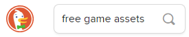

1.1. Voorbereiding#
1.1.1. Mappen aanmaken#
Maak voor dit project in je games map een nieuwe map aan met de naam fruitcatcher. Maak in die nieuwe map alvast de mappen images en fonts aan. Hieronder zie je de gewenste structuur.
1.1.2. Assets downloaden#
Game developers noemen de bestanden die ze in hun game gebruiken, zoals afbeeldingen, geluiden en lettertypes, vaak assets. Download de volgende vier afbeeldingen en zorg dat ze terechtkomen in de fruitcatcher\images map die je zojuist maakte.
{kind=link}
{kind=link}
{kind=link}
{kind=link}
Download vervolgens het onderstaande lettertype en plaats het in de map fruitcatcher\fonts.
Je beschikt nu over alle assets voor het basisspel.
Tip
Wil je een game maken en ben je op zoek naar leuke sprites? Typ in je zoekmachine dan free game assets.

1.1.3. Codebestand maken#
Maak in Mu editor een nieuw bestand en sla het op in je fruitcatcher map onder de naam fruitcatcher.py.
Check nog eens of je alle bestanden op de juiste plek hebt staan. De structuur zou de volgende moeten zijn:
Klopt het allemaal? Dan kan het programmeren beginnen!